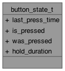

button_state_t Yapı(Struct) Referans
Bir butonun durumunu ve zamanlamasını takip eden yapı tipi. Ayrıntılar...
button_state_t için işbirliği (collaboration) şeması:

Veri Alanları | |
| absolute_time_t | last_press_time |
| Son kayıtlı buton basma zamanı | |
| bool | is_pressed |
| Butonun mevcut basılı durumu. | |
| bool | was_pressed |
| Butonun önceki basılı durumu. | |
| uint32_t | hold_duration |
| Basılı tutulma süresi (ms) | |
Ayrıntılı tanımlama
Bir butonun durumunu ve zamanlamasını takip eden yapı tipi.
Alan Dokümantasyonu
◆ hold_duration
| uint32_t button_state_t::hold_duration |
Basılı tutulma süresi (ms)
◆ is_pressed
| bool button_state_t::is_pressed |
Butonun mevcut basılı durumu.
◆ last_press_time
| absolute_time_t button_state_t::last_press_time |
Son kayıtlı buton basma zamanı
◆ was_pressed
| bool button_state_t::was_pressed |
Butonun önceki basılı durumu.
Bu yapı(struct) için dokümantasyon aşağıdaki dosyadan üretilmiştir:
Oluşturan